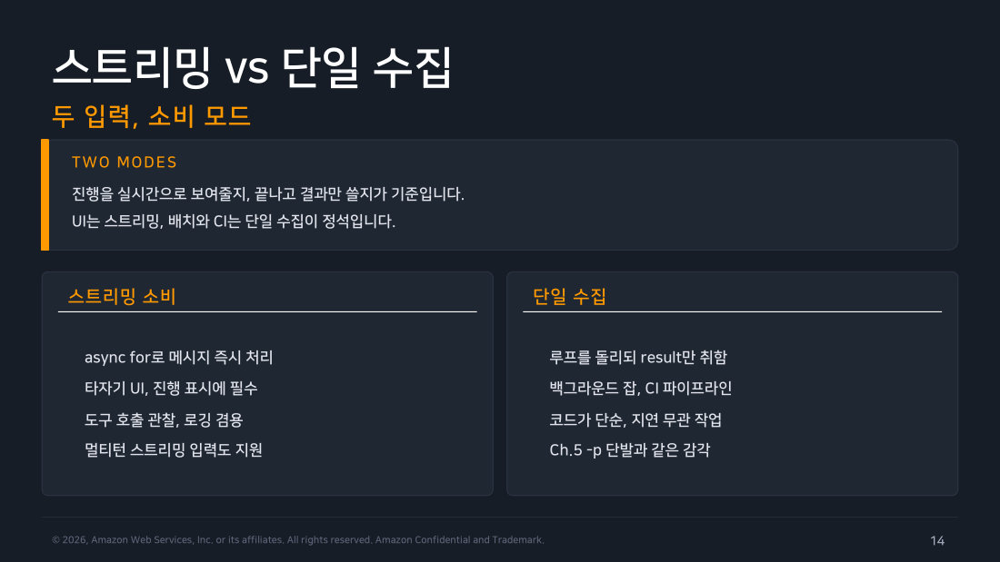
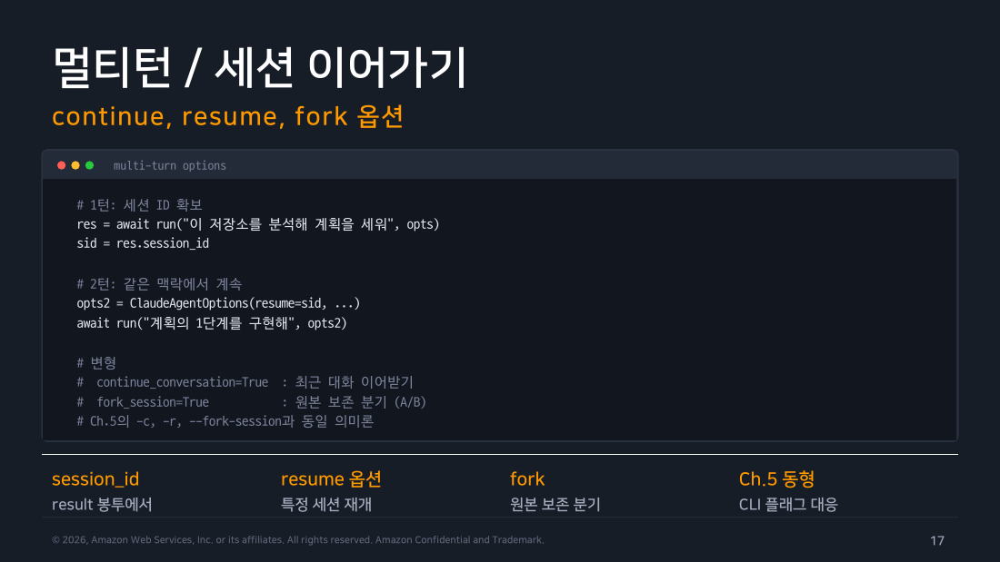

Part 2 — query와 멀티턴¶
한 줄 요약¶
점검 대화를 이어야 할 때, 스트림 끝까지 읽은 뒤 성공한 result의 session_id만 다음 query()의 resume에 넘깁니다.
왜 알아야 하나¶
Part 1의 최소 프로그램은 한 번 묻고 result를 포착한 뒤 스트림을 끝까지 읽었습니다. 사내 배포 점검 도우미가 다음 실행에서 이전 점검을 비교하려면 result가 준 session_id를 보관했다가 다음 query()에 넣어야 합니다. W5의 --resume과 같은 역할입니다. 재개가 이어받는 것은 대화 기록뿐이며, 도구 허용 목록·권한·턴 상한은 다음 호출에서 다시 정합니다.

▲ 교재 슬라이드 14 — 스트리밍 vs 단일 수집
1. 두 번째 query에 대화만 이어 붙입니다¶
랩의 chat.mjs는 사람이 한 줄씩 입력하면 그때마다 query()를 새로 호출하는 반복 대화 스크립트입니다. 새 ID는 스트림 안에서 바로 저장하지 않습니다. result를 임시 변수에 담고 스트림이 끝난 뒤 성공 여부를 확인합니다.
let result;
const q = query({
prompt: line,
options: { resume: sessionId, allowedTools: [], maxTurns: 1 },
});
for await (const m of q) {
if (m.type === "result") result = m;
}
if (result?.subtype === "success") {
sessionId = result.session_id;
} else {
console.error("대화가 완료되지 않아 기존 sessionId를 유지합니다.");
}
처음에는 sessionId가 undefined입니다. 아직 값이 없는 상태라 새 대화로 시작합니다. 한 번의 query()가 여러 메시지를 보내며, result 뒤에도 event가 올 수 있습니다. 따라서 루프 안에서는 result만 포착하고 trailing event까지 모두 읽습니다. 루프가 정상 종료된 뒤 subtype이 success일 때만 sessionId를 갱신합니다. 실패하거나 result가 없으면 기존 ID를 그대로 두므로 다음 질문이 실패한 세션으로 덮어쓰이지 않습니다. 우리 코드가 대화 내용을 다시 붙이는 것이 아니라, 어느 대화를 계속할지 가리키는 번호표만 보관하는 셈입니다. 이 재개는 세션 트랜스크립트가 남아 있는 같은 호스트에서만 성립합니다.
allowedTools: []는 대화만 확인하려는 랩의 범위를 보여 줍니다. 실무에서는 이전 맥락을 잇는 일과 그 세션에 어떤 도구를 다시 줄지 따로 정해야 합니다. resume은 대화 기록만 이어받고, 도구 허용 목록은 호출마다 새로 넘깁니다.
직접 해보기¶
랩의 chat.mjs를 TTY(사람이 직접 입력하는 대화형 터미널)에서 실행했습니다.
두 번째 질문이 첫 대화에서 말한 이름을 정확히 기억했습니다. 성공한 result의 sessionId를 다음 resume에 넘겨 대화가 이어졌다는 관측입니다.
2. 메시지 종류는 필요할 때만 늘어납니다¶
Part 1에서는 assistant(모델 문장)와 result(에이전트 루프 요약)만 봤습니다. 이 예제에서 주로 보는 core type은 여기에 우리가 보낸 말을 담는 user, 대화 시작을 알리는 system을 더한 넷입니다. 도구를 쓰면 모델의 도구 호출(tool_use)은 assistant 메시지에, 실행 결과(tool_result)는 user 메시지에 담겨 돌아옵니다. 이름은 user지만 사람이 보낸 말이 아니라 도구 응답일 수 있습니다. 실제 스트림에는 stream·rate-limit·task 알림 같은 관측 event와 result 뒤 trailing system event도 올 수 있습니다. 화면에는 assistant의 message.content 안 text 블록을 그리고, result는 포착하되 for await를 끝까지 소비한 후 정상 완료를 판정합니다.

▲ 교재 슬라이드 17 — 멀티턴 / 세션 이어가기
흔한 오해 바로잡기¶
"resume으로 대화를 이으면 이전에 준 도구 권한도 같이 이어진다" — 아닙니다. resume이 이어받는 건 대화 기록뿐입니다. allowedTools는 호출마다 새로 넘겨야 하는 값이라 재개했다고 이전 호출의 도구 허용 범위가 자동으로 따라오지 않습니다.
정리¶
resume에 이전 session_id를 넣으면 같은 호스트에 남은 트랜스크립트를 바탕으로 대화가 이어집니다. 다른 호스트에서는 ID만으로 재개할 수 없고 sessionStore 또는 트랜스크립트 복원이 필요합니다. resume은 대화 기록만 잇고, 도구·권한·상한은 호출마다 다시 정합니다. assistant 문장과 result의 session ID·턴 수·비용은 다른 메시지에 담겨 오므로 result 뒤 event까지 읽은 후 완료를 판정합니다. 다음 파트에서는 이 대화에 배포 규정 조회용 읽기 도구 하나를 더합니다.
출처¶
- Claude Code Deep Dive Workshop — Chapter 6 / Part 2: query와 멀티턴 (슬라이드 14~22)
- 공식 문서: TypeScript SDK, Agent loop, Sessions